from aesara import pprint
from matplotlib import pyplot as plt, ticker
import numpy as np
import pandas as pd
import scipy as sp
import seaborn as sns
from sklearn.preprocessing import StandardScaler
import pymc as pm
from aesara import tensor as at
import arviz as az
import xarray as xrBasic Bayesian Workflow
This notebook provides an overview of the basic Bayesian workflow in PyMC 4
Create model
Simulate some data
with pm.Model() as sim:
x_dist = pm.Normal("x", 10, 1)
ϵ_dist = pm.Normal("ϵ", 0, 1.5)
x_raw, ϵ = pm.draw([x_dist, ϵ_dist], 250)
y_raw = 5 + 3 * x_raw + ϵplt.scatter(x_raw, y_raw)
plt.title("Simulated data")
plt.xlabel('x')
plt.ylabel('y')
plt.show();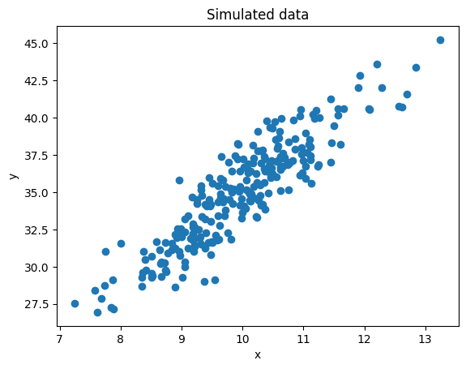
Scale data
Note that standardized data:
- Does not require an intercept
- Has a natural range for the regression slope
from sklearn.preprocessing import StandardScalerx_scaler, y_scaler = StandardScaler(), StandardScaler()
x = x_scaler.fit_transform(x_raw.reshape([-1,1])).squeeze()
y = y_scaler.fit_transform(y_raw.reshape([-1,1])).squeeze()plt.scatter(x, y)
plt.title("Standardized simulated data")
plt.xlabel('x')
plt.ylabel('y')
plt.show();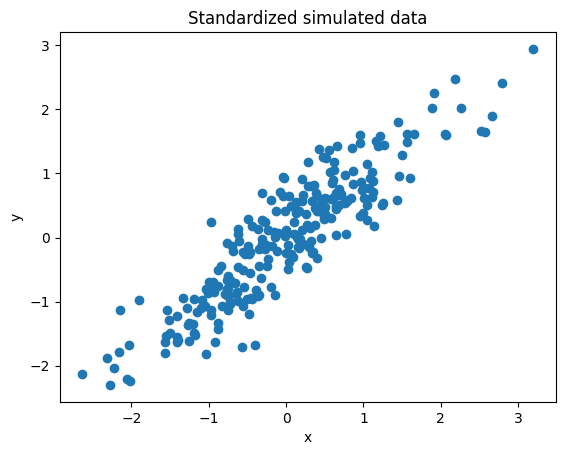
Setup model
Note that due to the prior this a regularized model.
def setup_model(x, y, intercept=True):
model = pm.Model()
with model:
if intercept: α = pm.Normal("α", 0, 1)
else: α = 0
β = pm.Normal("β", 0, 1)
σ = pm.HalfNormal("σ", 1)
μ = α + β * x
obs = pm.Normal("obs", μ, σ, observed=y)
return model
model = setup_model(x, y, True)Visualise model
pm.model_to_graphviz(model)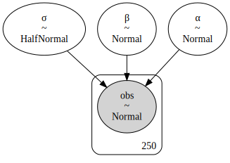
Check priors parameters
prior_samples = pm.sample_prior_predictive(samples=100, var_names=['α', 'β', 'σ', 'obs'], model=model)for idx, row in prior_samples.prior.to_dataframe().iterrows():
α = row['α']
β = row['β']
plt.plot(x, α + β * x, c='lightgrey')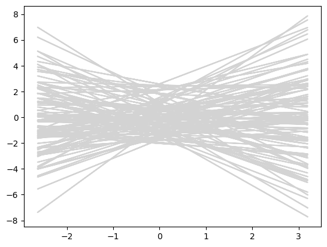
Check prior predictive
az.plot_dist(
y,
kind="hist",
color="C1",
hist_kwargs=dict(alpha=0.6),
label="observed",
)
az.plot_dist(
prior_samples.prior_predictive["obs"],
kind="hist",
hist_kwargs=dict(alpha=0.6),
label="simulated",
)
plt.xticks(rotation=45);
plt.title('Historgram of observed and simulated target')Text(0.5, 1.0, 'Historgram of observed and simulated target')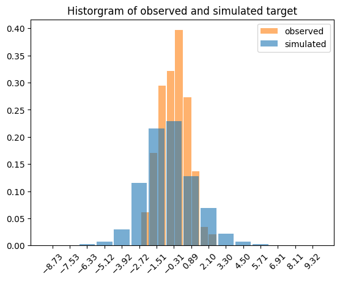
Fit model
Sample using NUTS
with model:
#model_idata = pm.sample()
model_trace = pm.sample(return_inferencedata=False)
model_idata = pm.to_inference_data(trace=model_trace, model=model, log_likelihood=True)Auto-assigning NUTS sampler...
Initializing NUTS using jitter+adapt_diag...
Multiprocess sampling (4 chains in 4 jobs)
NUTS: [α, β, σ]
100.00% [8000/8000 00:01<00:00 Sampling 4 chains, 0 divergences]
Sampling 4 chains for 1_000 tune and 1_000 draw iterations (4_000 + 4_000 draws total) took 2 seconds.Verify model
Summary
az.summary(model_idata, round_to=2)| mean | sd | hdi_3% | hdi_97% | mcse_mean | mcse_sd | ess_bulk | ess_tail | r_hat | |
|---|---|---|---|---|---|---|---|---|---|
| α | -0.00 | 0.03 | -0.06 | 0.05 | 0.0 | 0.0 | 5933.97 | 3118.52 | 1.0 |
| β | 0.90 | 0.03 | 0.85 | 0.95 | 0.0 | 0.0 | 5774.87 | 3143.23 | 1.0 |
| σ | 0.43 | 0.02 | 0.40 | 0.47 | 0.0 | 0.0 | 5548.62 | 2994.59 | 1.0 |
Verify parameter sampling
az.plot_trace(model_idata);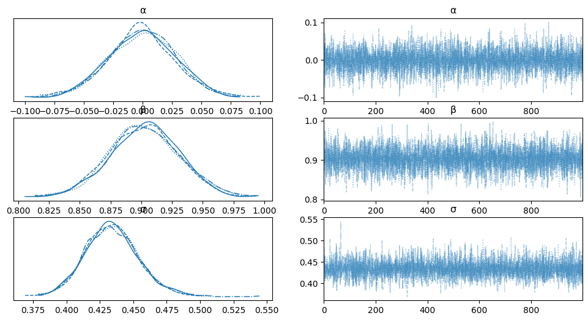
Verify posterior label sampling
# Note works if only posterior predictive y_hat is in sample
model_posterior_sample = pm.sample_posterior_predictive(model_idata, model=model)
az.plot_ppc(model_posterior_sample);
100.00% [4000/4000 00:00<00:00]
/home/sanne/.virtualenvs/pymc/lib/python3.10/site-packages/IPython/core/events.py:89: UserWarning: Creating legend with loc="best" can be slow with large amounts of data.
func(*args, **kwargs)
/home/sanne/.virtualenvs/pymc/lib/python3.10/site-packages/IPython/core/pylabtools.py:151: UserWarning: Creating legend with loc="best" can be slow with large amounts of data.
fig.canvas.print_figure(bytes_io, **kw)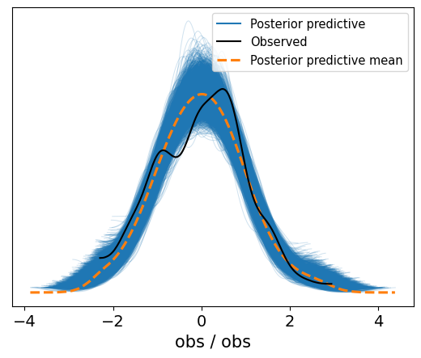
Plot HDI intervals
posterior = model_idata.posterior
model_obs = (posterior["α"] + np.random.normal(0, posterior["σ"]) + posterior["β"] * xr.DataArray(x))
model_mu = (posterior["α"] + posterior["β"] * xr.DataArray(x))
avg_model_mu = model_mu.mean(dim=['chain', 'draw'])az.plot_hdi(x, model_mu, hdi_prob=.96, color='r', fill_kwargs={"alpha": .2})
az.plot_hdi(x, model_obs, hdi_prob=.96, color='black', fill_kwargs={"alpha": .2})
plt.scatter(x, y, alpha=0.4)
plt.plot(x, avg_model_mu, color='black')
plt.xlabel('x')
plt.ylabel('y_hat')
plt.title('HDI intervals for α + β * x and α + β * x + ϵ');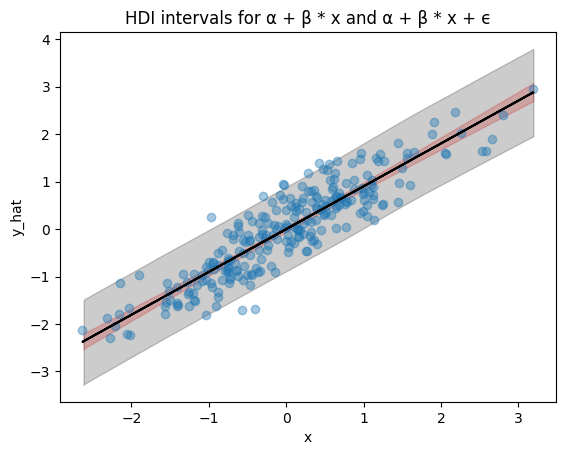
Assess model fit
az.waic(model_idata)Computed from 4000 posterior samples and 250 observations log-likelihood matrix.
Estimate SE
elpd_waic -146.70 10.87
p_waic 2.87 -Interpret results
Plot forest
for var_name in ['α', 'β', 'σ']:
az.plot_forest(model_idata, var_names=var_name);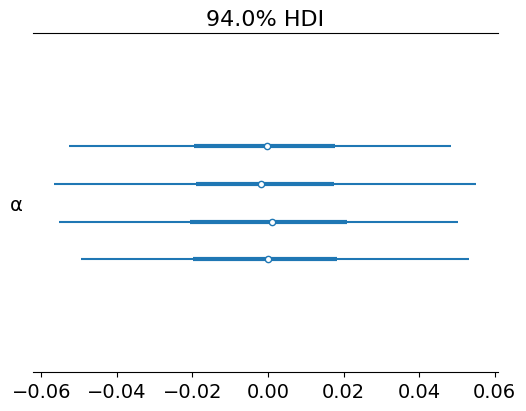
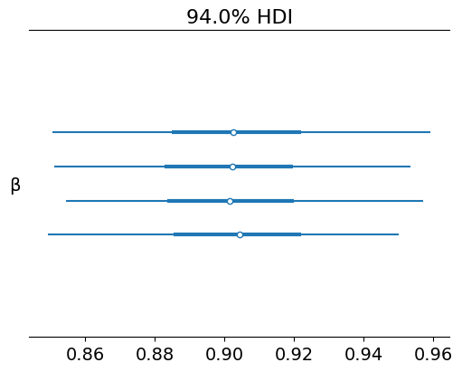
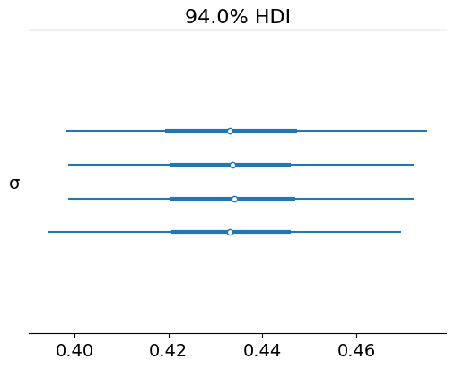
Plot HDI for parameters
az.plot_posterior(model_idata);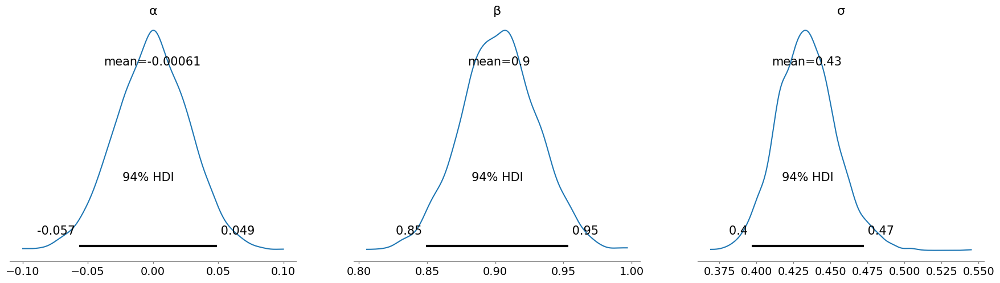
Compare with better model
Create better model
better_model = setup_model(x, y, False)
with better_model:
better_model_idata = pm.sample()
az.plot_trace(better_model_idata);Auto-assigning NUTS sampler...
Initializing NUTS using jitter+adapt_diag...
Multiprocess sampling (4 chains in 4 jobs)
NUTS: [β, σ]
100.00% [8000/8000 00:01<00:00 Sampling 4 chains, 0 divergences]
Sampling 4 chains for 1_000 tune and 1_000 draw iterations (4_000 + 4_000 draws total) took 2 seconds.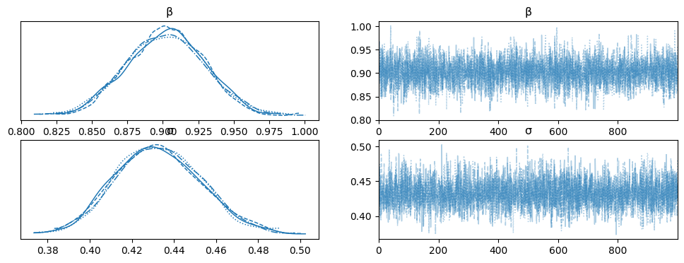
az.waic(better_model_idata)Computed from 4000 posterior samples and 250 observations log-likelihood matrix.
Estimate SE
elpd_waic -145.66 10.89
p_waic 1.85 -Compare the fit
# df_comp_loo = az.compare({
# "model": model_idata,
# "better_model": better_model_idata
# })
# df_comp_loo# Plot loo or WAICC with dloo or dWAIC
#az.plot_compare(df_comp_loo, insample_dev=False);